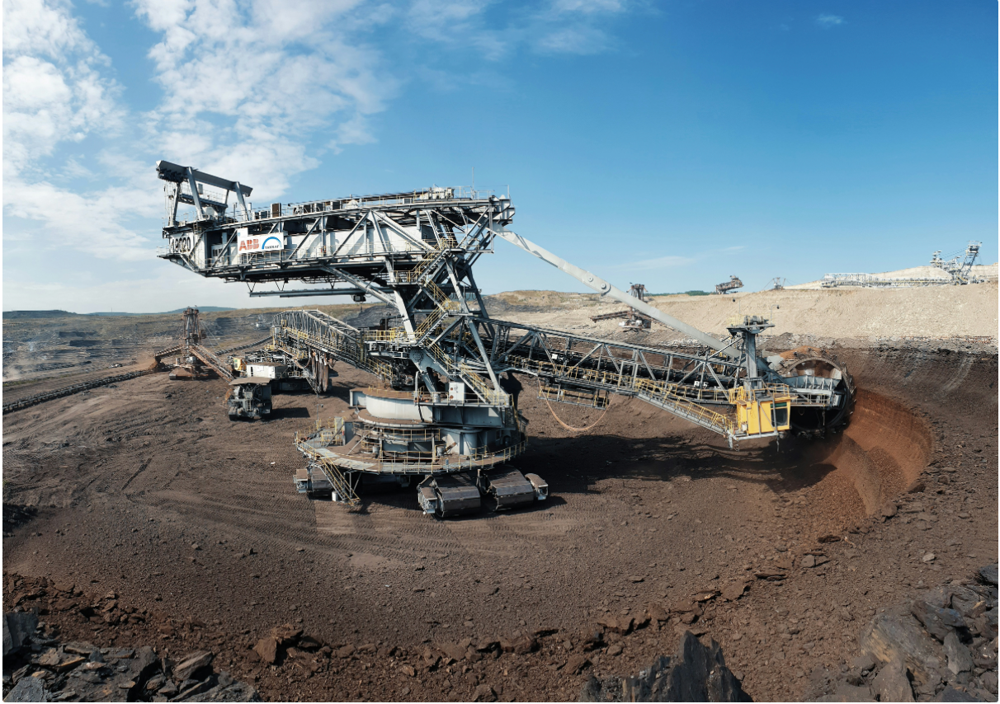
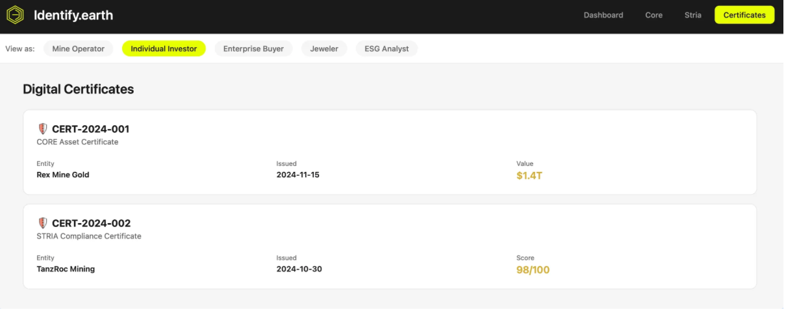

Element United Launches World's First Blockchain Mining Registry: Identify.earth
Identify.earth verifies metals and minerals from in-ground preservation to consumer, introducing dual-path transparency system
FOR IMMEDIATE RELEASE
Salt Lake City, Utah – November 2025
Element United today officially launched Identify.earth—a global digital registry that verifies and traces metals and minerals from extraction point to consumer—and now, for the first time, from in-ground preservation to verified value.
The Identify.earth platform integrates two complete systems:
STRIA™ — Real-time traceability for extracted materials across the entire supply chain, from mine to market
CORE™ — In-ground asset verification, impact reporting and market tools, and marketplace for preserved and unearthed resources
Together, these systems create an unbroken chain of transparency—from verified resources in the ground to finished products in consumers' hands.
Identify.earth sets a new standard for responsible sourcing, providing jewelers, minters, and manufacturers with verified provenance while helping mines demonstrate compliance and build trust with partners and communities. Mines that partner with Element United gain a competitive advantage: verified transparency makes their materials more desirable to conscious consumers and premium brands.
"Identify.earth brings transparency to the source," said Scott Lomu, President of Element United. "Mines gain efficiency. Supply chain partners gain confidence. Communities gain accountability. Everyone benefits from verified truth."
Think of it like meeting the farmer who grew your coffee—except now, consumers meet the miner who extracted the gold in their wedding ring, the smelter who refined it, and every hand it passed through along the way. Know your miner. Know your artisan. Know your supply chain. Transparency doesn't just meet regulatory requirements—it creates market preference.
Whether you're a jeweler seeking transparency for your clients or a miner building competitive advantage through verified practices, Identify.earth creates market opportunities for responsible sourcing. Visit ElementUnited.earth to join the verified supply chain.
Element United acknowledges [Company] as a key technology partner in the development of Identify.earth.
About Element United
Element United provides blockchain-based verification systems for natural resource management and responsible mining. Through Identify.earth and its integrated platforms STRIA™ and CORE™, Element United creates transparent supply chains from mine to consumer—proving that full supply chain visibility is possible.
Every element tells a story. Element United built the system that maps them all—making trust infrastructure.
Media Contact
Element United
Press Relations
press@elementunited.com